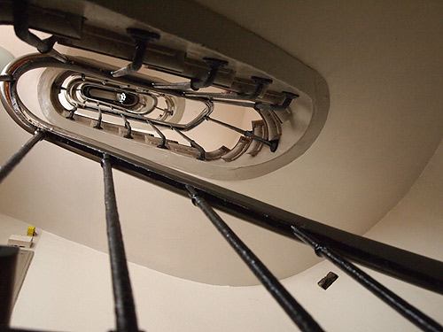
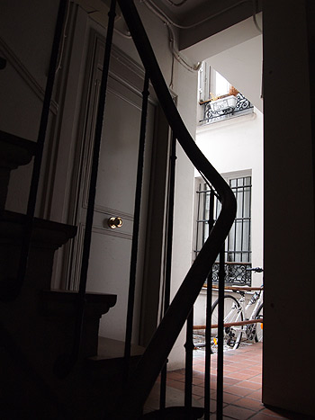
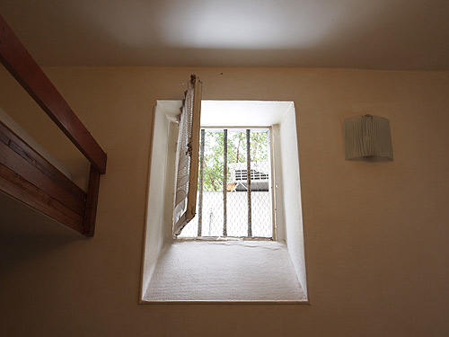
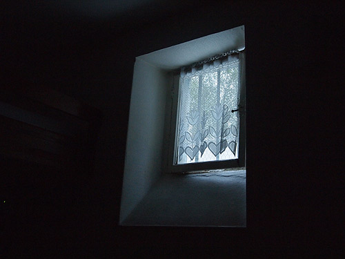

{kind=link}

建物建てたはいいけど階段つけるの忘れて、無理やり作ったんじゃないのかとゆーぐらい狭い螺旋階段。 大きなスーツケースを横にしたら詰まってしまいそうな横幅。 来るまでは「2階じゃなくて4階ぐらいがいいなぁ～」なんて思ってたけど、2階でよかったよ！ --------------------------------------------------- 我覺得。。。這家房屋營造的時候工作人忘了造樓梯，然後他們想起來造樓梯。。。 因爲這樓梯很狹小！把大行李搬不到樓上去。 我來以前想要住在四樓。。。不過！二樓好！ --------------------------------------------------- 部屋ここ。 --------------------------------------------------- 這兒我的房間 ---------------------------------------------------{kind=link}

鍵は2つ。上の鍵と下の鍵。上の鍵は施錠開錠に相当なテクニックがいる。 大家さんもなんか苦労していた。 「下だけでも大丈夫よ！」というので下の鍵しかしなかった。 それでもやたらと鍵を回すのが固くて苦労した。ぐるぐる2回。 MIWAロックが恋しくなる。 --------------------------------------------------- 這個房間進去的時候必須要兩個鑰匙。 上部的鑰匙，下部的鑰匙。 上部的鑰匙開門非常難。房東告訴我[沒關係！只關上下部！沒問題！] 可是上部的鑰匙一樣難。。。我愛[MIWA鑰匙！(在日本最有名的鑰匙牌子）] --------------------------------------------------- 階下はバーで、週末金曜は4時まで、土曜は朝6時までのりのりのダンスナンバーで大盛り上がり！ お布団かぶってるとうずうずするから、行ってこようかと思ったけど毎日歩き回ってぐったりだったから行けず。 が、のちのち調べたら階下はレズビアンバーだったみたい。 行ったら新しい自分に出会えてたか…も？ --------------------------------------------------- 樓下有一家酒吧。星期五是到夜半四點，星期六是到早上六點熱烈營業！ 我躺在床上的時候聽到跳舞音樂！可是我非常累。。。所以我不能去樓下。。。 不過！聽説樓下的酒吧是同性戀的酒吧！ 如果我去樓下酒吧，我看到新世界！ --------------------------------------------------- 天井近くの小さな窓。換気のための窓？ --------------------------------------------------- 天花板旁邊有小小的窗戶。 --------------------------------------------------- 近所でよく見かけた猫を呼んでいる声がよく聞こえた。 （確証はないけどたぶんそうだと思う「ルター？」だか「ルカー？」って何度も呼んでいる声が一日に何度かする） この小窓から猫がのぞきこんできたらいいのにね。 --------------------------------------------------- 我常常聽到叫貓名字的聲音。 ---------------------------------------------------{kind=link}

夜明けの青いひかり。夜の色が溶けてる。 --------------------------------------------------- 黎明的藍色光。夜的顔色融化了。 ---------------------------------------------------{kind=link}
